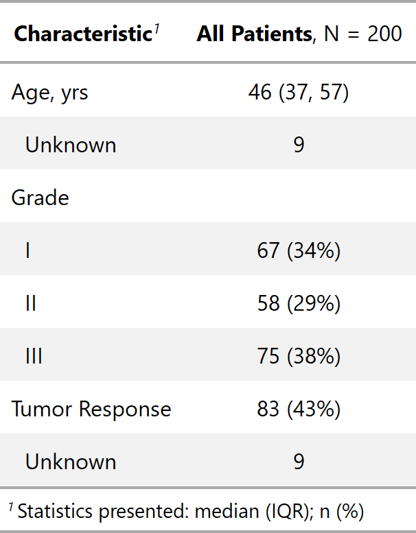
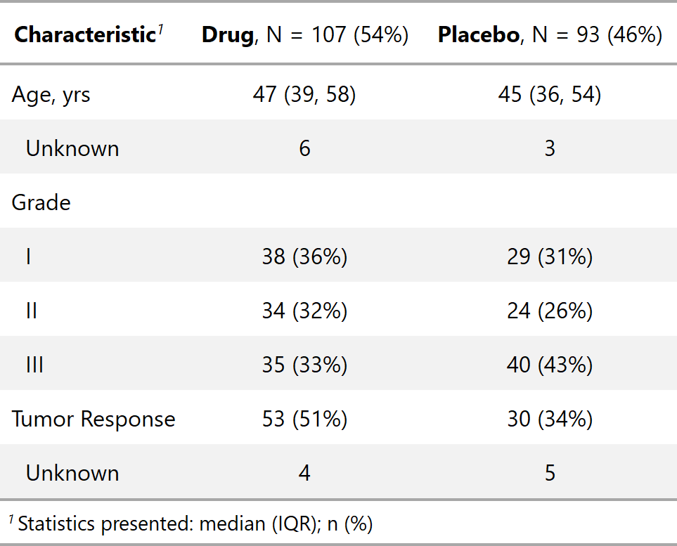

| modify_header {gtsummary} | R Documentation |
Column labels can be modified to include calculated statistics; e.g. the N can be dynamically included by wrapping it in curly brackets (following glue::glue syntax).
modify_header(x, stat_by = NULL, ..., text_interpret = c("md", "html"))
x |
gtsummary object, e.g. |
stat_by |
String specifying text to include above the summary statistics
stratified by a variable. Only use with stratified
Syntax follows glue::glue,
e.g. |
... |
Specifies column label of any other column in |
text_interpret |
indicates whether text will be interpreted as markdown ( |
Function return the same class of gtsummary object supplied
Example 1

Example 2

Daniel D. Sjoberg
Other tbl_summary tools:
add_n(),
add_overall(),
add_p(),
add_q.tbl_summary(),
add_stat_label(),
bold_italicize_labels_levels,
bold_p.tbl_summary(),
inline_text.tbl_summary(),
sort_p.tbl_summary(),
tbl_merge(),
tbl_stack(),
tbl_summary()
Other tbl_regression tools:
add_global_p.tbl_regression(),
add_nevent.tbl_regression(),
bold_italicize_labels_levels,
bold_p.tbl_regression(),
bold_p.tbl_stack(),
combine_terms(),
inline_text.tbl_regression(),
sort_p.tbl_regression(),
tbl_merge(),
tbl_regression(),
tbl_stack()
Other tbl_uvregression tools:
add_global_p.tbl_uvregression(),
add_nevent.tbl_uvregression(),
add_q.tbl_uvregression(),
bold_italicize_labels_levels,
bold_p.tbl_stack(),
bold_p.tbl_uvregression(),
inline_text.tbl_uvregression(),
sort_p.tbl_uvregression(),
tbl_merge(),
tbl_stack(),
tbl_uvregression()
Other tbl_survival tools:
inline_text.tbl_survival(),
tbl_survival.survfit()
tbl_col_ex1 <-
trial[c("age", "grade", "response")] %>%
tbl_summary() %>%
modify_header(stat_0 = "**All Patients**, N = {N}")
tbl_col_ex2 <-
trial[c("age", "grade", "response", "trt")] %>%
tbl_summary(by = trt) %>%
modify_header(
stat_by = "**{level}**, N = {n} ({style_percent(p, symbol = TRUE)})"
)